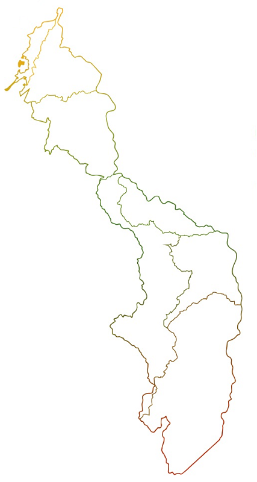

<ion-header>
  <ion-navbar>
    <button ion-button menuToggle>
      <ion-icon name="menu"></ion-icon>
    </button>
    <ion-title>POT 2018 - Gobernación de Bolívar</ion-title>
  </ion-navbar>
</ion-header>

<ion-content padding>
  <div class="dvcontent-img">&nbsp;&nbsp;
    <!--  -->
  </div>
  <button ion-button full color="secondary" menuToggle>
    <ion-icon name="menu"></ion-icon>
    &nbsp;&nbsp; Menú
  </button>
</ion-content>
